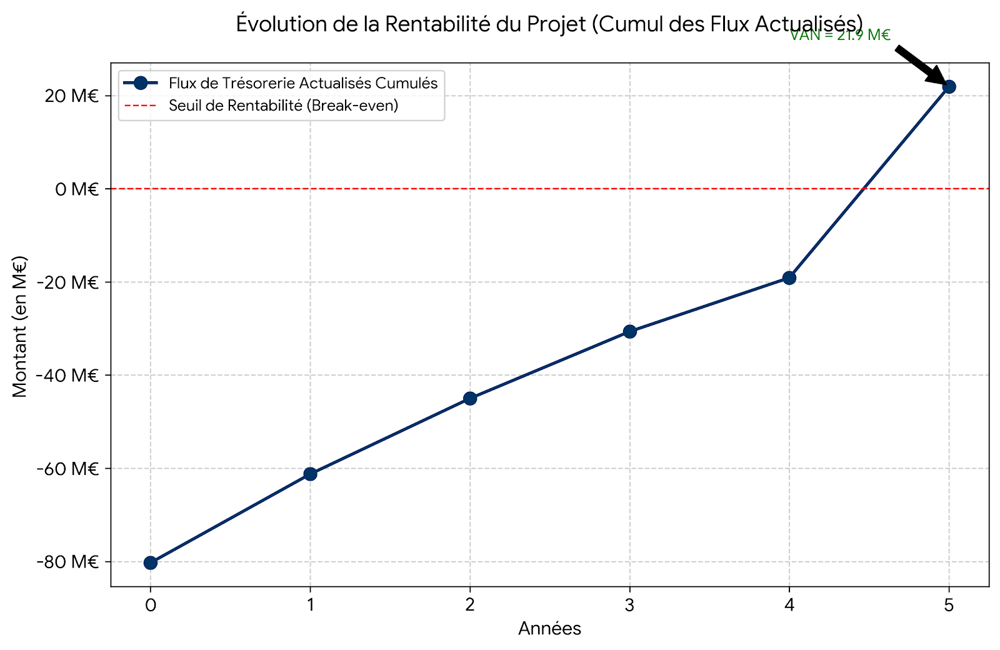
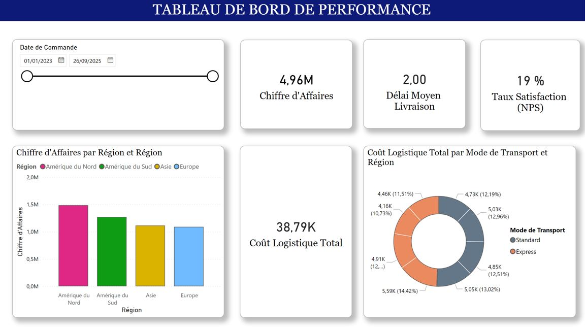
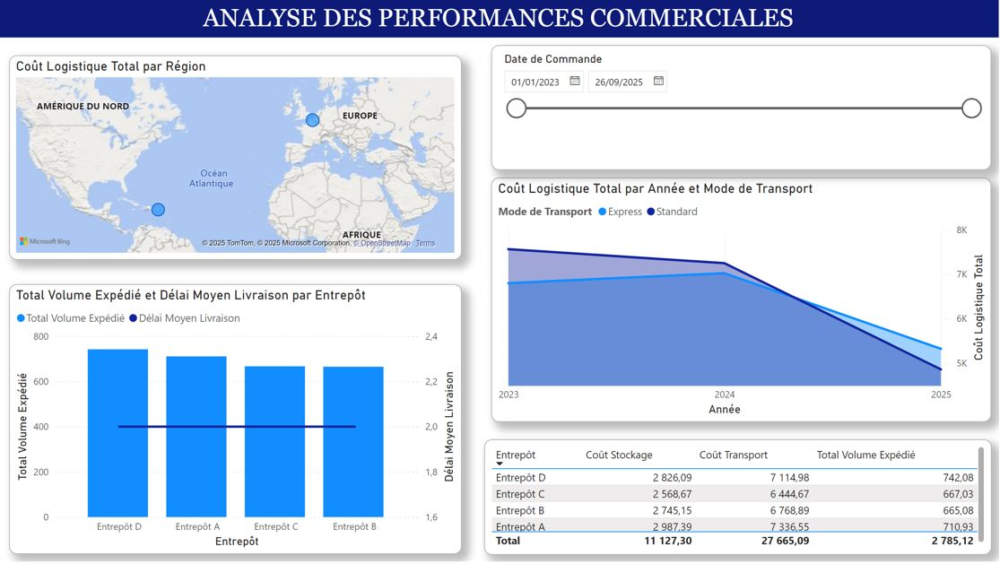
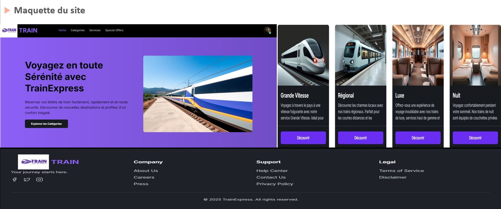
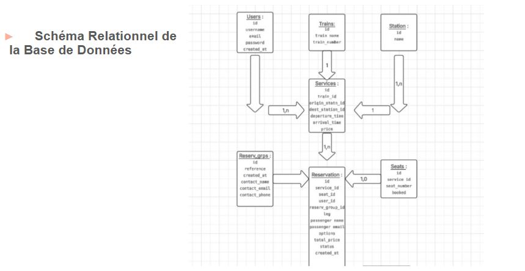
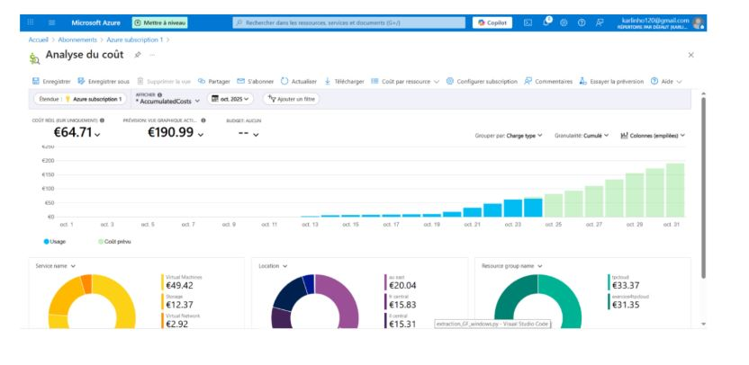

À propos de moi
Futur ingénieur diplômé de l'ECAM-EPMI, je suis spécialisé en Management des Systèmes d'Information (MSI) et Ingénierie Financière. Ce double cursus me permet de maîtriser à la fois les enjeux stratégiques de la finance et les leviers technologiques pour les résoudre.
De la modélisation financière (Cash Flows, VAN) à l'architecture Cloud (Azure) en passant par la Business Intelligence (Power BI), j'ai développé une approche "Data-Driven" pour optimiser la prise de décision et sécuriser les processus bancaires et industriels.
Je suis à la recherche d'un stage de fin d'études de 6 mois, avec un démarrage flexible entre Février et Avril 2026. Prêt à m'investir au sein de vos équipes en tant que :
- Consultant SI / MOA (Banque & Assurance)
- Business Analyst Finance
- Data Analyst (Pilotage de la Performance)
- Product Owner Junior (Data / Finance)
- Assistant Chef de Projet SI
Mes Réalisations
1. Finance Stratégique : Cas European Airlines

Le Challenge : Valider la viabilité économique d'un investissement de 75 M€ (Airbus A320) pour la ligne Paris-Berlin et structurer son financement.
Ma Solution : Développement d'un modèle financier complet sur Excel.
- Business Plan : Projection des Cash Flows sur 5 ans et calcul du BFR.
- KPIs : Rentabilité validée (VAN : 21,9 M€, TRI : 23,74%) comme le montre la courbe ci-dessus.

- Ingénierie de la Dette : Structuration d'un financement mixte (Dette/Equity) pour optimiser l'effet de levier (voir répartition ci-dessus).
- Risk Management : Stress-test du modèle face à une crise de demande (-20% de trafic).
2. Business Intelligence : Pilotage Logistique

Le Challenge : Optimiser la Supply Chain d'un acteur E-commerce international en centralisant des données hétérogènes (ERP, CSV) pour réduire les coûts.
Ma Solution : Conception d'un tableau de bord décisionnel complet sous Power BI.
- Data Engineering : Nettoyage et modélisation en étoile via Power Query pour lier commandes et entrepôts.
- KPIs Stratégiques : Suivi en temps réel du Chiffre d'Affaires et des délais moyens de livraison (voir ci-dessus).

- Analytique Avancée (DAX) : Calcul dynamique des coûts logistiques par zone géographique (Carte) et par mode de transport.
- Résultat : Identification des zones de surcoût et optimisation des stocks pour réduire les ruptures.
3. Tech Fullstack : Plateforme Train Booking

Le Challenge : Digitaliser le processus de réservation ferroviaire via une interface intuitive et sécurisée.
Ma Solution : Pilotage Agile et développement d'une application web.
- Architecture : Frontend React.js et Backend PHP/Node.js.
- Sécurité : Authentification utilisateur et sécurisation des transactions.

- Architecture de Données : Conception et implémentation d’un schéma relationnel normalisé sous MySQL, garantissant l’intégrité référentielle des transactions complexes (Réservations/Trajets).
4. Cloud Computing & FinOps : Architecture Azure

Le Challenge : Déployer une infrastructure Cloud sécurisée et redondante (Multi-régions) tout en maîtrisant les coûts opérationnels (OPEX).
Ma Solution : Mise en œuvre d'une architecture IaaS sous Microsoft Azure.
- Architecture Réseau : Création de VNet, sous-réseaux et Peering international (Europe/USA).
- Sécurité : Gestion des identités (IAM), Bastion et configuration des NSG (Pare-feu).

- Approche FinOps : Monitoring et analyse précise de la consommation (voir répartition Compute vs Stockage ci-dessus) pour optimiser le budget.
Mon Expertise
1. Ingénierie Financière & BI
Capacité à traduire des enjeux financiers en solutions techniques.
- Finance de Marché & Corporate : Valorisation d'entreprise, VAN/TRI, Gestion de portefeuille, Produits dérivés.
- Business Intelligence : Création de Dashboards décisionnels (Power BI), Reporting financier.
- Actuariat : Modélisation probabiliste et gestion des risques.
2. IT & Cybersécurité
Solide bagage technique pour dialoguer avec les équipes de développement.
- Cloud & Réseaux : Déploiement Azure, Virtualisation (VMware, VirtualBox), Sécurité réseau (Bastion, SSH).
- Développement : Python (Data), SQL (Bases de données), HTML/CSS/JS (Web), C/C++.
- Outils : Excel Avancé, GMAO (Coswin), AutoCAD/Revit (BIM).
3. Gestion de Projet & Soft Skills
Pilotage de projets complexes avec une approche méthodique.
- Méthodes : Agile / Scrum, Planification Gantt, ITIL.
- Savoir-être : Esprit de synthèse, Communication inter-services (Tech/Métier), Adaptabilité.
- Langues : Anglais (B1), Français (Maternel).
Me Contacter
Mon profil vous intéresse ? N'hésitez pas à me contacter pour échanger sur une opportunité de stage ou pour discuter de mes projets.